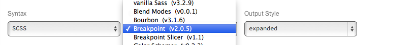

Wifi: TBD
Pass: TBD
You should have a paper handout. It contains:
These training instances will be up for
30 days so you can keep experimenting!
The repo is open source and available on GitHub:
https://github.com/fourkitchens/advanced-rwd
We've got a typo. Could you fix it for us?
Open this file:
/index.html
Fix this typo:
<h2>Welcome to the <em>worst</em> training ever!</h2>
Sass is a language construct to create CSS
It makes writing awesome CSS easier
Sass has TWO syntaxes:
.sass and .scss
.sass - whitespace sensitive
// .sass
.my-selector
font-size: 2em
background: #333
font-family: $monospace
// .scss
.my-selector {
font-size: 2em;
background: #333;
font-family: $monospace;
}
.scss - superset of CSS
$blue: #00ff00;
$monospace: "Source Code Pro", "Courier New", monospace;
$default-fontsize: 1em;
$default-padding: 2 * $default-fontsize;
Sass lets you use variables to store values.
@function pixel-to-em($pixel, $font-size: 16px) {
@return $pixel / $font-size * 1em;
}
Functions return a single value, just like PHP or JS
// Define
@mixin button-make($color: #66B360) {
background-color: $color;
border: 2px solid lighten($color, 20%);
}
// Call
.button-one {
@include button-make;
}
// Call with arguments
.button-two {
@include button-make($color-facebook);
}
Mixins are similar to functions, except they return blocks of CSS.
// Sass
.message {
margin: 1em;
padding: 1em;
font-size: 1.2em;
}
.error {
@extend .message;
color: #060;
}
/* CSS */
.message, .error {
margin: 1em;
padding: 1em;
font-size: 1.2em;
}
.error {
color: #060;
}
Extendables allow you to build upon a common style.
/*
* This is a standard, multi-line comment
* that will appear in your final .css file
*
* Use multi-line comments to mark major headings or partials
*/
// Single-line comments will NOT appear in your final .css file
// Use single-line comments for developer notes
Compass is a meta-framework for Sass
Provides useful mixins and functions
Includes plugin framework to allow for community written extensions
| HTML | CSS |
| PHP | Sass |
| Drupal | Compass |
| Modules | Extensions |
.my-icon {
@include replace-text('druplicon.png');
}
.my-icon {
text-indent: -119988px;
overflow: hidden;
text-align: left;
background-image: url('../images/druplicon.png?1358263178');
background-repeat: no-repeat;
background-position: 50% 50%;
}
In this case, the mixin handles image replacement of text for you.
These are Ruby gems, just like Sass and Compass.
Toolkit bundles lots of this stuff together.
We'll be covering media queries using SassMeister.com
Make sure to choose Breakpoint
from the Extension drop-down:

// If the window is at least 500px wide...
@media (min-width: 500px) { ... }
// If the window is less than 785px wide...
@media (max-width: 785px) { ... }
// If the user is printing the page...
@media (print) { ... }
// If the window is in between 520px and 699px...
@media all and (min-width: 520px) and (max-width: 699px) { ... }
Breakpoint is a Compass extension. It makes
media queries much easier to read.
$nav-lg: 682px;
.main-nav {
width: 100%;
@include breakpoint($nav-lg) {
width: 60%;
margin: 0 auto;
}
}
.main-nav {
width: 100%;
}
@media (min-width: 682px) {
.main-nav {
width: 60%;
margin: 0 auto;
}
}
You keep all the styles for a component in one place
No real performance hit from dupe media queries.
CSS-only fallback system. No need for respond.js
Breakpoint can also output fallback classes to use with IE since media queries did not work before IE9
$breakpoint-no-query-fallbacks: true;
$nav-lg: 500px, 'no-query' '.lte-ie9';
nav {
@include breakpoint($nav-lg) {
width: 60%;
margin-right: 4%;
}
}
@media (min-width: 500px) {
nav {
width: 60%;
margin-right: 4%;
}
}
.lte-ie9 nav {
width: 60%;
margin-right: 4%;
}
Just add a conditional class to your <html> element
Create a single breakpoint on the page.
Change the background color.
Create two breakpoints.
Use two different min-width queries.
Create a breakpoint between the previous two.
Use a min-width and max-width query.
We'll complete the next set of exercises
in our personal development environments.
Use the information on your paper slip
to find the URL, username, and password.
* { @include box-sizing('border-box'); }12 column grid
Each column is 60px wide
Each gutter is 20px wide
10px side gutter
960px Centered Container
$grids: 12; // Number of Columns
$gutters: 1/3; // Gutter to Column ratio, 20px/60px = 1/3Align to columns using Grid Span:
@include grid-span($span, $position); $span is the number of columns to span
$position is what column to start from
#container {
max-width: 960px; // Outer Container
padding: 0 10px; // Side Gutter
margin: 0 auto; // Center Container
@include clearfix; // Have container clear floats properly
}
.left {
@include grid-span(6,1);
}
.right {
@include grid-span(6,7);
}Settings $grids and $gutters set a global context for them, making them available to use without redeclaring them each time they're needed.
You can set different global contexts to use at different min-width or max-width breakpoints
$grids: 12;
$grids: add-grid(2 8 2 at 500px);
$gutters: 1/3;
$gutters: add-gutter(1/4 at 532px);When using the breakpoint mixin, Singularity is able to determine which global context you'd like and subsequently use the correct one when you use the grid-span mixin
$grids: 2;
$grids: add-grid(4 at 475px);
$gutters: 1/6;
#nav {
width: 100%;
@include breakpoint(500px) {
@include grid-span(3, 2);
}
}If you need to override the global contexts, for instance if you need to nest a grid and therefore change the grid you're using, use the layout mixin
$grids: 12;
$gutters: 1/3;
#main {
@include grid-span(8, 1);
@include layout(8) {
.left {
@include grid-span(4, 1);
}
.right {
@include grid-span(4, 5);
}
}
}Create a two column layout in the Web Chef Café.
use Singularity
Create a three column layout at a different breakpoint.
use Singularity and Breakpoint
Nest one grid inside another
use the Layout mixin
Grids should work with the content itself, not impose a class structure. We should not limit ourselves to a 12 column layout with four breakpoints.
Instead, let's design our sites around the content, creating awesome mobile-first layouts.
In short: We deserve better.
Grids provide order to your design and structure to your information.
The ideal grid is specific to your content and your design, as it is an extension of both.
Grids where the columns are not the same size
Custom grids for each design allow for more unique designs to better highlight your content
Singularity Extras is very useful when working with asymmetric grids
Custom - Any asymmetric grid created to suit your needs
Compound - Created by combining symmetric grids
Ratio - Each column is derived from the previous according to a ratio
Ratio Spiral - Columns are generated based on an overlaid spiral
Snap - Asymmetric grid that takes into account an overlaid symmetric grid's gutters
// List of column width in relation to each other
$grids: 5 2 3 3 7 9;// List of symmetric grids to compound together
$grids: compound(3, 4);// Ratio and number of columns
$grids: ratio(golden(), 4);// Number of columns and ratio
$grids: ratio-spiral(5, golden());// Asymmetric grid and the gutter width of the grid to snap to.
$grids: snap(2 4 4 2, 1/3);It provides HTML5 templates and some optional tools. You're in control of your theme.
It's designed to allow you to create you own sub-themes without the need to copy/find/replace a starter-kit.
The compass extension provides three flavors of an Aurora sub-theme to choose from. They are all very similar. Only their Sass partial structures differ:
Sass tools
Workflow goodies
Aurora theming will happen on your
personal development environments
Good news! They already have Sass,
Compass, and all the other gems installed.
Code is located at:
/twhome/YOU/sassrwd/drupal
Drupal is also installed. Just use
the information on your paper slip.
On other computers you'll have to install
ruby, compass, and compass-aurora.
Full directions are on the Aurora documentation.
Create a Aurora Corona sub-theme
and then enable it in Drupal.
compass create {theme_name} -r aurora --using aurora/coronaChange the output directories within your new
Compass project to use "js" instead of "javascripts"
restart compass once you change the config file
Get Compass running within your theme
and make a change on the Drupal site.
compass compile is a one-time command
compass watch will keep compiling
It arose as a response to the staggering number of devices accessing the web.
The web was designed to embrace this diversity, so we should too.
Testing browser capabilities on the fly allows each device to format content in the best manner.
Like two people with the same name,
user-agent strings tell us very little
about two different Chromes, IEs, etc.
Forget about tracking all the mobile devices!
Modernizr takes a browser's fingerprint
Even though feature detection is WAY more reliable than UA-sniffing, it still gets fed bad data occasionally
You can't detect a touch screen.
JavaScript can only see APIs that are exposed to it
Since many JavaScript tools use classes on <html>
to store their state, we can use the Sass parent selector to easily target them.
It keeps your code more organized.
#logo a {
background-image: url(../img/logo.png);
.inlinesvg & {
background-image: url('data:image/svg+xml;utf8,...');
}
}
#logo a {
background-image: url(../img/logo.png);
}
.inlinesvg #logo a {
background-image: url('data:image/svg+xml;utf8,...');
}
Working with Modernizr will happen on your
personal development environments
They already have the Modernizr module downloaded,
but it is not yet installed and running properly.
Enable Modernizr module and verify that it is working
drush mdl
If you need to load a piece of code to make up for missing browser features, Modernizr has you covered.
Modernizr.load() loads stuff based on test results:
Modernizr.load({
test: Modernizr.geolocation,
nope: '/sites/all/libraries/geolocation/geo.js',
callback: function(){ geo.init(); }
});
Modernizr can be used the other way around too.
Use it to load stuff only when needed.
Modernizr.load({
test: Modernizr.mq('(min-width: 42em)'),
yep: '/sites/all/themes/example/xl.css'
});
Test API: allows modules/themes to declare tests
Load API: allows modules/themes to use Modernizr.load()
Modules use a hook:
function MYMODULE_modernizr_info() {
$tests[] = 'geolocation';
return $tests;
}
Themes use the .info file:
modernizr[tests][] = geolocation
Get a new feature test to appear in the
Modernizr module's configuration page.
add a test in your Aurora sub-theme .info file
bonus: if you can write module hooks,
make a hook in the cafe module
Use another hook:
function MYMODULE_modernizr_load() {
$load[] = array(
'test' => 'Modernizr.geolocation',
'nope' => array(drupal_get_path('module','geolocation') . '/js/geo.js'),
'callback' => 'function(){ geo.init(); }',
);
return $load;
}Turns into:
Modernizr.load({
test: Modernizr.geolocation,
nope: '/sites/all/modules/geolocation/js/geo.js',
callback: function(){ geo.init(); }
});
mytheme.info file:
modernizr[Modernizr.cssfilters][yep][] = css/super-fancy.css
Turns into:
Modernizr.load({
test: Modernizr.cssfilters,
yep: '/sites/all/themes/mytheme/css/super-fancy.css'
});
mytheme_modernizr_load_alter()
works the same as module hooks too.
Create a conditional load using the Load API.
add the code to your Aurora sub-theme .info file
bonus: those who are module-fearless
can write another hook in cafe module.
Check out modernizr.api.php
Meet the Modernizr module
3:15pm in OR 202 (Lullabot room)
We'd really appreciate your thoughts about today
so we can continue improving this course.
Surveys are being handed out so you can provide
us with feedback in an anonymous fashion.
We appreciate your honest opinion.